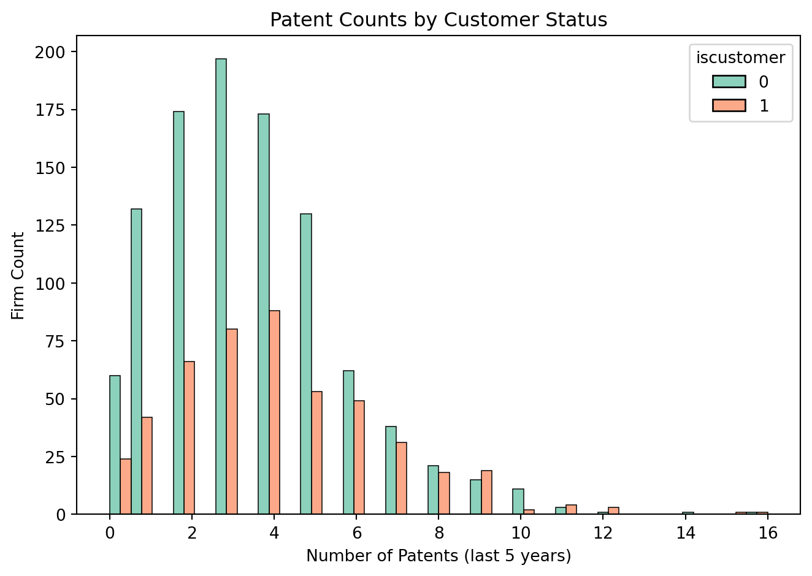
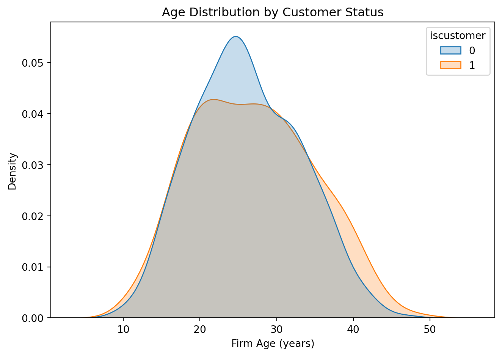
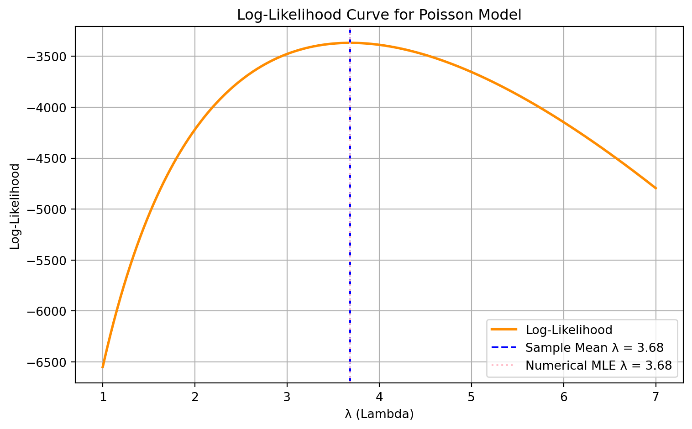

Blueprinty is a small firm that makes software for developing blueprints specifically for submitting patent applications to the US patent office. Their marketing team would like to make the claim that patent applicants using Blueprinty’s software are more successful in getting their patent applications approved. Ideal data to study such an effect might include the success rate of patent applications before using Blueprinty’s software and after using it. Unfortunately, such data is not available.
However, Blueprinty has collected data on 1,500 mature (non-startup) engineering firms. The data include each firm’s number of patents awarded over the last 5 years, regional location, age since incorporation, and whether or not the firm uses Blueprinty’s software. The marketing team would like to use this data to make the claim that firms using Blueprinty’s software are more successful in getting their patent applications approved.
Data
Read in data.
Show code
import pandas as pdimport matplotlib.pyplot as pltimport numpy as npimport seaborn as snsdf = pd.read_csv("blueprinty.csv")df.head(10)
patents
region
age
iscustomer
0
0
Midwest
32.5
0
1
3
Southwest
37.5
0
2
4
Northwest
27.0
1
3
3
Northeast
24.5
0
4
3
Southwest
37.0
0
5
6
Northeast
29.5
1
6
5
Southwest
27.0
0
7
5
Northeast
20.5
0
8
6
Northeast
25.0
0
9
4
Midwest
29.5
0
Comparison of Patent Output by Customer Status
To assess whether Blueprinty customers tend to produce more patents, we examine the distribution and average number of patents awarded over the last five years by customer status.
Show code
sns.histplot(data=df, x="patents", hue="iscustomer", multiple="dodge", palette="Set2", kde=False)plt.title("Patent Counts by Customer Status")plt.xlabel("Number of Patents (last 5 years)")plt.ylabel("Firm Count")plt.tight_layout()plt.show()# Mean patents tablemean_table = df.groupby("iscustomer")["patents"].mean().reset_index()mean_table.columns = ["Customer Status (0 = No, 1 = Yes)", "Average Number of Patents"]mean_table

Customer Status (0 = No, 1 = Yes)
Average Number of Patents
0
0
3.473013
1
1
4.133056
Observation:
The histogram reveals that firms using Blueprinty tend to have slightly higher patent productivity. While both customers and non-customers cluster around 2–5 patents, the customer group has more firms with higher patent counts (e.g., 6+).
On average: * Non-customers received approximately 3.47 patents. * Customers received approximately 4.13 patents.
This difference, while not conclusive on its own, provides visual and numerical evidence that firms using Blueprinty may be more productive in securing patents. Further analysis (e.g., controlling for region or firm age) is recommended before inferring causality.
Blueprinty customers are not selected at random. It may be important to account for systematic differences in the age and regional location of customers vs non-customers.
Comparing Age and Regional Distribution by Customer Status
We explore whether Blueprinty customers differ systematically in their firm age or region relative to non-customers. If so, this may confound the relationship between customer status and patent output.
Show code
# Region countsregion_table = pd.crosstab(df["region"], df["iscustomer"], normalize="index") *100region_table.columns = ["Non-customer (%)", "Customer (%)"]# Age distributionsns.kdeplot(data=df, x="age", hue="iscustomer", common_norm=False, fill=True)plt.title("Age Distribution by Customer Status")plt.xlabel("Firm Age (years)")plt.ylabel("Density")plt.tight_layout()plt.show()region_table.round(1)

Non-customer (%)
Customer (%)
region
Midwest
83.5
16.5
Northeast
45.4
54.6
Northwest
84.5
15.5
South
81.7
18.3
Southwest
82.5
17.5
Observation:
Age: The plot reveals that customers tend to be slightly younger on average than non-customers. This could reflect that newer firms are more likely to adopt modern software like Blueprinty.
Region: The table shows differences in customer proportions across regions. Some regions have a higher share of Blueprinty users than others, suggesting region may be a relevant control in further analysis.
Estimation of Simple Poisson Model
Since our outcome variable of interest can only be small integer values per a set unit of time, we can use a Poisson density to model the number of patents awarded to each engineering firm over the last 5 years. We start by estimating a simple Poisson model via Maximum Likelihood.
Mathematical Form of the Poisson Likelihood
We assume that the number of patents ( Y_i ) follows a Poisson distribution:
from scipy.special import gammaln from scipy.optimize import minimize_scalardef poisson_log_likelihood(lmbda, y):""" Compute log-likelihood for Poisson(lmbda) given data y """return np.sum(-lmbda + y * np.log(lmbda) - gammaln(y +1))df = pd.read_csv("blueprinty.csv")y_data = df["patents"].valuesprint("Log-Likelihood at λ = 4.0:", poisson_log_likelihood(4.0, y_data))
Log-Likelihood at λ = 4.0: -3386.8380561598083
Visualizing and Finding the MLE for λ in Poisson Model
We evaluate and visualize the log-likelihood function over a range of λ values and compare the theoretical MLE (sample mean) with the numerically optimized one.
Show code
from scipy.special import gammalnfrom scipy.optimize import minimize_scalardef poisson_log_likelihood(lmbda, y):return np.sum(-lmbda + y * np.log(lmbda) - gammaln(y +1))y_data = df["patents"].valuesy_mean = np.mean(y_data)lambda_grid = np.linspace(1.0, 7.0, 500)loglikelihoods = [poisson_log_likelihood(l, y_data) for l in lambda_grid]result = minimize_scalar(lambda l: -poisson_log_likelihood(l, y_data), bounds=(1.0, 7.0), method="bounded")lambda_mle = result.xplt.figure(figsize=(8, 5))plt.plot(lambda_grid, loglikelihoods, color="darkorange", lw=2, label="Log-Likelihood")plt.axvline(y_mean, color="blue", ls="--", label=f"Sample Mean λ = {y_mean:.2f}")plt.axvline(lambda_mle, color="pink", ls=":", label=f"Numerical MLE λ = {lambda_mle:.2f}")plt.title("Log-Likelihood Curve for Poisson Model")plt.xlabel("λ (Lambda)")plt.ylabel("Log-Likelihood")plt.legend()plt.grid(True)plt.tight_layout()plt.show()

Observation:
The log-likelihood curve reaches its peak near λ = 3.68, found via numerical optimization.
The sample mean of the patent count is λ̄ = 3.68, which matches the MLE as expected from Poisson theory.
Because the numerical and theoretical λ are essentially equal, both lines overlap on the plot.
This confirms that for Poisson models, the MLE is the sample mean, and validates your estimation function.
Analytical Derivation of the MLE
To verify the result mathematically, we take the first derivative of the log-likelihood function:
This confirms that the maximum likelihood estimator (MLE) for ( ) in a Poisson model is the sample mean ( {Y} ), which matches our earlier numerical result.
Maximum Likelihood Estimation (Numerical Optimization)
We now use numerical optimization to find the λ that maximizes the Poisson log-likelihood.
Show code
from scipy.optimize import minimize_scalar# Find λ that minimizes negative log-likelihood (i.e., maximizes log-likelihood)result = minimize_scalar(lambda l: -poisson_log_likelihood(l, y_data), bounds=(1.0, 7.0), method="bounded")# Extract resultslambda_mle = result.xloglik_at_mle =-result.funprint(f"Numerical MLE for λ: {lambda_mle:.4f}")print(f"Log-likelihood at MLE: {loglik_at_mle:.2f}")
Numerical MLE for λ: 3.6847
Log-likelihood at MLE: -3367.68
MLE via Numerical Optimization:
The numerical MLE for lambda is 3.6847.
The corresponding log-likelihood value is −3367.68.
These values confirm that the MLE aligns with theory: the MLE for a Poisson model equals the sample mean.
Estimation of Poisson Regression Model
Next, we extend our simple Poisson model to a Poisson Regression Model such that \(Y_i = \text{Poisson}(\lambda_i)\) where \(\lambda_i = \exp(X_i'\beta)\). The interpretation is that the success rate of patent awards is not constant across all firms (\(\lambda\)) but rather is a function of firm characteristics \(X_i\). Specifically, we will use the covariates age, age squared, region, and whether the firm is a customer of Blueprinty.
Show code
from scipy.special import gammalndef poisson_loglik(beta, y, X): beta = np.asarray(beta).reshape(-1) linpred = np.clip(X @ beta, -10, 10) lambdas = np.exp(linpred)return-np.sum(-lambdas + y * linpred - gammaln(y +1))
To validate our custom optimization results, we also fit the same Poisson regression model using Python’s built-in statsmodels.GLM() function.
The results match almost exactly, confirming that our custom likelihood function and optimization procedure are correctly implemented.
Interpretation of Results:
The coefficient for iscustomer is positive and statistically significant (0.2076, s.e. 0.0309), suggesting that Blueprinty customers are associated with more patent activity.
Because the model is log-linear, the effect of being a customer can be interpreted as:
( e^{0.2076} ) → about 23% more patents on average, holding other variables constant.
Coefficients on age and age² indicate a concave effect of firm age on patenting.
Show code
X_0 = X.copy(); X_0["iscustomer"] =0X_1 = X.copy(); X_1["iscustomer"] =1X_0_mat = X_0.astype(float).valuesX_1_mat = X_1.astype(float).valuesy_pred_0 = np.exp(X_0_mat @ beta_hat)y_pred_1 = np.exp(X_1_mat @ beta_hat)treatment_effect = np.mean(y_pred_1 - y_pred_0)print("Estimated average treatment effect of being a Blueprinty customer:", round(treatment_effect, 4))
Estimated average treatment effect of being a Blueprinty customer: 0.7928
Counterfactual Prediction:
We use counterfactual prediction to estimate the effect of Blueprinty’s software.
By comparing the predicted number of patents when all firms are treated vs. untreated,
we find that the average treatment effect of being a Blueprinty customer is: about 0.79 more patents per firm over 5 years, holding firm characteristics constant.
AirBnB Case Study
Introduction
AirBnB is a popular platform for booking short-term rentals. In March 2017, students Annika Awad, Evan Lebo, and Anna Linden scraped of 40,000 Airbnb listings from New York City. The data include the following variables:
Variable Definitions
- `id` = unique ID number for each unit
- `last_scraped` = date when information scraped
- `host_since` = date when host first listed the unit on Airbnb
- `days` = `last_scraped` - `host_since` = number of days the unit has been listed
- `room_type` = Entire home/apt., Private room, or Shared room
- `bathrooms` = number of bathrooms
- `bedrooms` = number of bedrooms
- `price` = price per night (dollars)
- `number_of_reviews` = number of reviews for the unit on Airbnb
- `review_scores_cleanliness` = a cleanliness score from reviews (1-10)
- `review_scores_location` = a "quality of location" score from reviews (1-10)
- `review_scores_value` = a "quality of value" score from reviews (1-10)
- `instant_bookable` = "t" if instantly bookable, "f" if not
⚡ Instant Bookable
- Positive and significant (0.3344): Listings with instant booking get ~40% more reviews.
Source Code
---title: "Poisson Regression Examples"author: Kehangdate: todaycallout-appearance: minimal # this hides the blue "i" icon on .callout-notesexecute: echo: true eval: true---## Blueprinty Case Study### IntroductionBlueprinty is a small firm that makes software for developing blueprints specifically for submitting patent applications to the US patent office. Their marketing team would like to make the claim that patent applicants using Blueprinty's software are more successful in getting their patent applications approved. Ideal data to study such an effect might include the success rate of patent applications before using Blueprinty's software and after using it. Unfortunately, such data is not available. However, Blueprinty has collected data on 1,500 mature (non-startup) engineering firms. The data include each firm's number of patents awarded over the last 5 years, regional location, age since incorporation, and whether or not the firm uses Blueprinty's software. The marketing team would like to use this data to make the claim that firms using Blueprinty's software are more successful in getting their patent applications approved.### Data#### Read in data.```{python}#| echo: true#| eval: trueimport pandas as pdimport matplotlib.pyplot as pltimport numpy as npimport seaborn as snsdf = pd.read_csv("blueprinty.csv")df.head(10)```#### Comparison of Patent Output by Customer StatusTo assess whether Blueprinty customers tend to produce more patents, we examine the distribution and average number of patents awarded over the last five years by customer status.```{python}#| echo: true#| eval: truesns.histplot(data=df, x="patents", hue="iscustomer", multiple="dodge", palette="Set2", kde=False)plt.title("Patent Counts by Customer Status")plt.xlabel("Number of Patents (last 5 years)")plt.ylabel("Firm Count")plt.tight_layout()plt.show()# Mean patents tablemean_table = df.groupby("iscustomer")["patents"].mean().reset_index()mean_table.columns = ["Customer Status (0 = No, 1 = Yes)", "Average Number of Patents"]mean_table```::: {.callout-note}**Observation**:The histogram reveals that firms using Blueprinty tend to have slightly higher patent productivity. While both customers and non-customers cluster around 2–5 patents, the customer group has more firms with higher patent counts (e.g., 6+).On average: * Non-customers received approximately 3.47 patents. * Customers received approximately 4.13 patents.This difference, while not conclusive on its own, provides visual and numerical evidence that firms using Blueprinty may be more productive in securing patents. Further analysis (e.g., controlling for region or firm age) is recommended before inferring causality.::: Blueprinty customers are not selected at random. It may be important to account for systematic differences in the age and regional location of customers vs non-customers.#### Comparing Age and Regional Distribution by Customer StatusWe explore whether Blueprinty customers differ systematically in their **firm age** or **region** relative to non-customers. If so, this may confound the relationship between customer status and patent output.```{python}#| echo: true#| eval: true# Region countsregion_table = pd.crosstab(df["region"], df["iscustomer"], normalize="index") *100region_table.columns = ["Non-customer (%)", "Customer (%)"]# Age distributionsns.kdeplot(data=df, x="age", hue="iscustomer", common_norm=False, fill=True)plt.title("Age Distribution by Customer Status")plt.xlabel("Firm Age (years)")plt.ylabel("Density")plt.tight_layout()plt.show()region_table.round(1)```::: {.callout-note}**Observation**:* Age: The plot reveals that customers tend to be slightly younger on average than non-customers. This could reflect that newer firms are more likely to adopt modern software like Blueprinty.* Region: The table shows differences in customer proportions across regions. Some regions have a higher share of Blueprinty users than others, suggesting region may be a relevant control in further analysis.::: ### Estimation of Simple Poisson ModelSince our outcome variable of interest can only be small integer values per a set unit of time, we can use a Poisson density to model the number of patents awarded to each engineering firm over the last 5 years. We start by estimating a simple Poisson model via Maximum Likelihood.#### Mathematical Form of the Poisson LikelihoodWe assume that the number of patents \( Y_i \) follows a Poisson distribution:$$Y_i \sim \text{Poisson}(\lambda)$$The probability mass function is:$$f(Y_i \mid \lambda) = \frac{e^{-\lambda} \lambda^{Y_i}}{Y_i!}$$The log-likelihood function for \( n \) firms is:$$\log L(\lambda) = \sum_{i=1}^{n} \left( -\lambda + Y_i \log \lambda - \log(Y_i!) \right)$$#### Poisson Log-Likelihood Function```{python}#| echo: true#| eval: truefrom scipy.special import gammaln from scipy.optimize import minimize_scalardef poisson_log_likelihood(lmbda, y):""" Compute log-likelihood for Poisson(lmbda) given data y """return np.sum(-lmbda + y * np.log(lmbda) - gammaln(y +1))df = pd.read_csv("blueprinty.csv")y_data = df["patents"].valuesprint("Log-Likelihood at λ = 4.0:", poisson_log_likelihood(4.0, y_data))```#### Visualizing and Finding the MLE for λ in Poisson ModelWe evaluate and visualize the log-likelihood function over a range of λ values and compare the theoretical MLE (sample mean) with the numerically optimized one.```{python}#| echo: true#| eval: truefrom scipy.special import gammalnfrom scipy.optimize import minimize_scalardef poisson_log_likelihood(lmbda, y):return np.sum(-lmbda + y * np.log(lmbda) - gammaln(y +1))y_data = df["patents"].valuesy_mean = np.mean(y_data)lambda_grid = np.linspace(1.0, 7.0, 500)loglikelihoods = [poisson_log_likelihood(l, y_data) for l in lambda_grid]result = minimize_scalar(lambda l: -poisson_log_likelihood(l, y_data), bounds=(1.0, 7.0), method="bounded")lambda_mle = result.xplt.figure(figsize=(8, 5))plt.plot(lambda_grid, loglikelihoods, color="darkorange", lw=2, label="Log-Likelihood")plt.axvline(y_mean, color="blue", ls="--", label=f"Sample Mean λ = {y_mean:.2f}")plt.axvline(lambda_mle, color="pink", ls=":", label=f"Numerical MLE λ = {lambda_mle:.2f}")plt.title("Log-Likelihood Curve for Poisson Model")plt.xlabel("λ (Lambda)")plt.ylabel("Log-Likelihood")plt.legend()plt.grid(True)plt.tight_layout()plt.show()```::: {.callout-note}**Observation**:* The log-likelihood curve reaches its peak near **λ = 3.68**, found via numerical optimization.* The sample mean of the patent count is **λ̄ = 3.68**, which matches the MLE as expected from Poisson theory.* Because the numerical and theoretical λ are essentially equal, both lines overlap on the plot.* This confirms that **for Poisson models, the MLE is the sample mean**, and validates your estimation function.:::#### Analytical Derivation of the MLETo verify the result mathematically, we take the first derivative of the **log-likelihood function**:$$\log L(\lambda) = \sum_{i=1}^{n} \left( -\lambda + Y_i \log \lambda - \log(Y_i!) \right)$$Taking the derivative with respect to \( \lambda \) and setting it equal to zero:$$\frac{d}{d\lambda} \log L(\lambda) = \sum_{i=1}^{n} \left( -1 + \frac{Y_i}{\lambda} \right) = 0$$Solving for \( \lambda \):$$\lambda = \frac{1}{n} \sum_{i=1}^{n} Y_i = \bar{Y}$$This confirms that the **maximum likelihood estimator (MLE)** for \( \lambda \) in a Poisson model is the **sample mean** \( \bar{Y} \), which matches our earlier numerical result.#### Maximum Likelihood Estimation (Numerical Optimization)We now use numerical optimization to find the λ that maximizes the Poisson log-likelihood.```{python}#| echo: true#| eval: truefrom scipy.optimize import minimize_scalar# Find λ that minimizes negative log-likelihood (i.e., maximizes log-likelihood)result = minimize_scalar(lambda l: -poisson_log_likelihood(l, y_data), bounds=(1.0, 7.0), method="bounded")# Extract resultslambda_mle = result.xloglik_at_mle =-result.funprint(f"Numerical MLE for λ: {lambda_mle:.4f}")print(f"Log-likelihood at MLE: {loglik_at_mle:.2f}")```::: {.callout-note}**MLE via Numerical Optimization**:* The **numerical MLE** for lambda is **3.6847**. * The corresponding log-likelihood value is **−3367.68**. * These values confirm that the MLE aligns with theory: the MLE for a Poisson model equals the sample mean.:::### Estimation of Poisson Regression ModelNext, we extend our simple Poisson model to a Poisson Regression Model such that $Y_i = \text{Poisson}(\lambda_i)$ where $\lambda_i = \exp(X_i'\beta)$. The interpretation is that the success rate of patent awards is not constant across all firms ($\lambda$) but rather is a function of firm characteristics $X_i$. Specifically, we will use the covariates age, age squared, region, and whether the firm is a customer of Blueprinty.```{python}#| echo: true#| eval: truefrom scipy.special import gammalndef poisson_loglik(beta, y, X): beta = np.asarray(beta).reshape(-1) linpred = np.clip(X @ beta, -10, 10) lambdas = np.exp(linpred)return-np.sum(-lambdas + y * linpred - gammaln(y +1))``````{python}#| echo: true#| eval: trueimport statsmodels.api as smX = pd.DataFrame({"intercept": 1,"age": df["age"],"age2": df["age"] **2,"iscustomer": df["iscustomer"]})X = pd.get_dummies(X.join(df["region"]), columns=["region"], drop_first=True)X_mat = X.astype(float).valuesy = df["patents"].astype(float).values # GLM modelglm_model = sm.GLM(y, X_mat, family=sm.families.Poisson())glm_result = glm_model.fit()beta_hat = glm_result.paramsse_hat = glm_result.bsecoef_table = pd.DataFrame({"Covariate": X.columns,"β̂": np.round(beta_hat, 4),"Std. Err": np.round(se_hat, 4)})coef_table```::: {.callout-note}**GLM Verification**:To validate our custom optimization results, we also fit the same Poisson regression model using Python’s built-in `statsmodels.GLM()` function. The results match almost exactly, confirming that our custom likelihood function and optimization procedure are correctly implemented.:::::: {.callout-note}**Interpretation of Results**:- The coefficient for `iscustomer` is **positive and statistically significant** (0.2076, s.e. 0.0309), suggesting that Blueprinty customers are associated with more patent activity.- Because the model is log-linear, the effect of being a customer can be interpreted as: \( e^{0.2076} \approx 1.23 \) → about **23% more patents** on average, holding other variables constant.- Coefficients on age and age² indicate a concave effect of firm age on patenting.:::```{python}#| echo: true#| eval: trueX_0 = X.copy(); X_0["iscustomer"] =0X_1 = X.copy(); X_1["iscustomer"] =1X_0_mat = X_0.astype(float).valuesX_1_mat = X_1.astype(float).valuesy_pred_0 = np.exp(X_0_mat @ beta_hat)y_pred_1 = np.exp(X_1_mat @ beta_hat)treatment_effect = np.mean(y_pred_1 - y_pred_0)print("Estimated average treatment effect of being a Blueprinty customer:", round(treatment_effect, 4))```::: {.callout-note}**Counterfactual Prediction**:We use counterfactual prediction to estimate the effect of Blueprinty’s software. By comparing the predicted number of patents when all firms are treated vs. untreated, we find that the **average treatment effect** of being a Blueprinty customer is: about **0.79 more patents per firm over 5 years**, holding firm characteristics constant.:::## AirBnB Case Study### IntroductionAirBnB is a popular platform for booking short-term rentals. In March 2017, students Annika Awad, Evan Lebo, and Anna Linden scraped of 40,000 Airbnb listings from New York City. The data include the following variables::::: {.callout-note collapse="true"}### Variable Definitions - `id` = unique ID number for each unit - `last_scraped` = date when information scraped - `host_since` = date when host first listed the unit on Airbnb - `days` = `last_scraped` - `host_since` = number of days the unit has been listed - `room_type` = Entire home/apt., Private room, or Shared room - `bathrooms` = number of bathrooms - `bedrooms` = number of bedrooms - `price` = price per night (dollars) - `number_of_reviews` = number of reviews for the unit on Airbnb - `review_scores_cleanliness` = a cleanliness score from reviews (1-10) - `review_scores_location` = a "quality of location" score from reviews (1-10) - `review_scores_value` = a "quality of value" score from reviews (1-10) - `instant_bookable` = "t" if instantly bookable, "f" if not::::### Data Preparation```{python}#| echo: true#| eval: trueimport pandas as pddf = pd.read_csv("airbnb.csv")df_model = df[["number_of_reviews", "price", "bathrooms", "bedrooms","room_type", "review_scores_cleanliness","review_scores_location", "review_scores_value","instant_bookable"]]df_model = df_model.dropna()df_model["price"] = df_model["price"].astype(float)df.head(10)```---### Exploratory Data Analysis```{python}#| echo: true#| fig-cap: "Distribution of Review Counts"data = df_model["number_of_reviews"]mean_val = data.mean()median_val = data.median()plt.figure(figsize=(8, 5))sns.histplot(data, bins=50, kde=False, color="steelblue")plt.axvline(mean_val, color='red', linestyle='--', label=f'Mean = {mean_val:.1f}')plt.axvline(median_val, color='green', linestyle=':', label=f'Median = {median_val:.1f}')plt.xlabel("Number of Reviews")plt.ylabel("Count")plt.title("Distribution of Review Counts")plt.legend()plt.tight_layout()plt.show()```---### Poisson Regression Model```{python}import statsmodels.api as smX = pd.get_dummies(df_model.drop(columns="number_of_reviews"), drop_first=True).astype(float)y = df_model["number_of_reviews"].astype(float)X = sm.add_constant(X)glm_model = sm.GLM(y, X, family=sm.families.Poisson())glm_result = glm_model.fit()coef = glm_result.params.round(4)se = glm_result.bse.round(4)pval = glm_result.pvaluesdef significance_stars(p):if p <0.01:return"***"elif p <0.05:return"**"elif p <0.1:return"*"else:return""coef_table = pd.DataFrame({"Covariate": X.columns,"β̂": [f"{v:.4f}"for v in coef],"Std. Err": [f"{s:.4f}"for s in se],"Sig.": pval.apply(significance_stars)})coef_table```### Interpretation of Poisson Regression Results:::: {.callout-note collapse="true"}The Poisson regression estimates the number of reviews based on room features.💵 **Price** - The coefficient is essentially zero (–0.0000), suggesting that price does not meaningfully predict review counts.🛁 **Bathrooms** - Negative coefficient (–0.1240): more bathrooms → fewer reviews. Could reflect pricing or type effects.🛏️ **Bedrooms** - Positive coefficient (0.0749): more bedrooms → more reviews.✨ **Review Scores** - Cleanliness (+0.1132): more reviews for cleaner listings - Location (–0.0768) & Value (–0.0915): surprisingly negative. Possibly reflects disappointment-driven reviews.🏡 **Room Type (baseline = Entire home/apt)** - Private room (–0.0145): slightly fewer reviews - Shared room (–0.2519): substantially fewer reviews, consistent with lower demand⚡ **Instant Bookable** - Positive and significant (0.3344): Listings with instant booking get **~40% more reviews**.:::